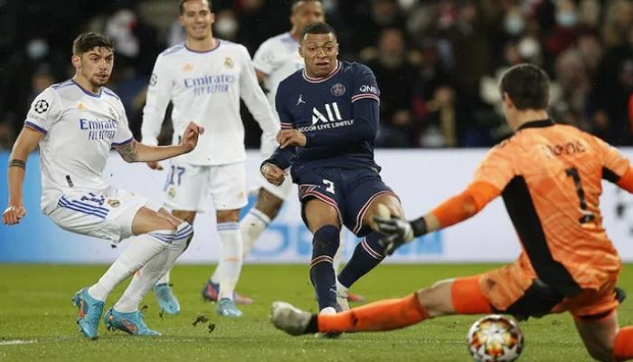

ريال مدريد ضد باريس, خسارة مؤلمه لكن قابله للتعويض
ذهب ريال مدريد لباريس بمعنويات سيئه بعد التعادل ضد فياريال في الدوري وتقليص الفارق مع الوصيف اشبيلية الى 3 نقاط
وذهب كريم بنزيما لفرنسا رغم خضوعه لنصف جلسة تدريب مع الفريق وهذا كان عامل مؤثر ضد ريال مدريد ومخاطره من انشيلوتي
بدأ انشيلوتي بالتشكيلة المتوقعه 433
في حراسة المرمى كورتوا
في الدفاع ميندي ميليتاو الابا كارفخال
في الوسط مودريتش كاسيميرو توني كروس
في الهجوم فينيسيوس بنزيما اسينسيو
اعتمد انشيلوتي خطة الدفاع والضرب بالمرتدات كالعاده ليستفيد من سرعة فينيسيوس وثنائيته مع بنزيما
بينما سيطر بوتشيتينو على معركة الوسط بوجود فيراتي وباريديس ودانيلو لمساندة الدفاع لأعطاء الحرية لأنطلاق الأظهره دون التقيد بأدوار دفاعيه
اسينسيو لم يكن فعالا في الأدوار الهجوميه ولا حتى في مساندة كارفخال على الخارق مبابي وكذلك بنزيما قدم اسوأ مباراة بحكم عودته من الأصابه
تلقى كاسيميرو وميندي بطاقة صفراء وبهذا يغيبون عن مباراة الأياب في السانتياغو برنابيو ,العوده في النتيجه لريال مدريد وارده جدا لكن بشرط ان يلعب انشيلوتي بأسلوب الضغط العالي واغلاق المساحات واختيار 11 لاعب بعنايه